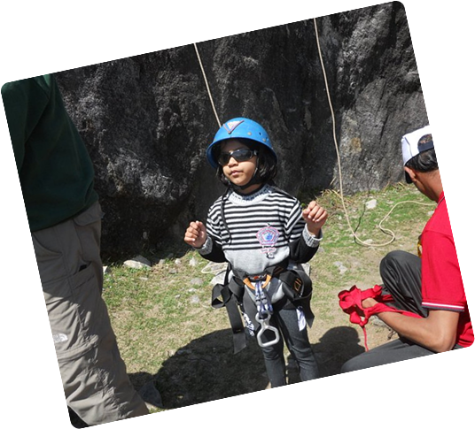
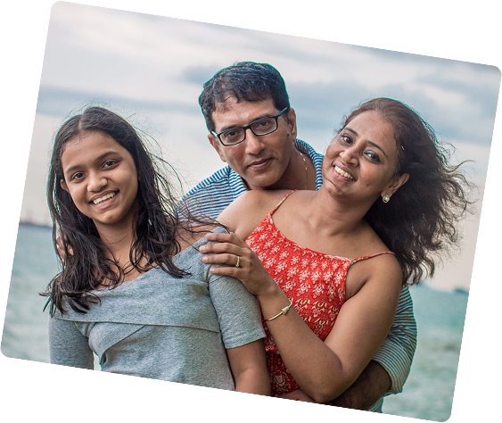
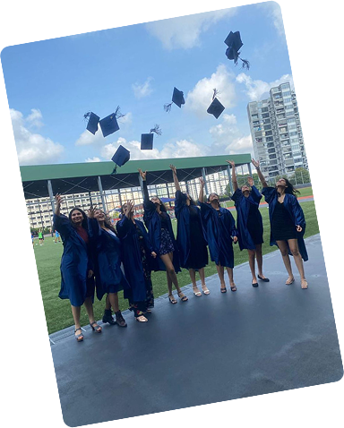
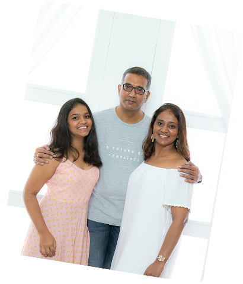
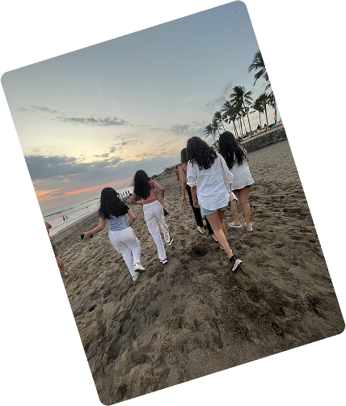

I was born in Mumbai, India, where I spent my early years surrounded by my parents and grandparents. At the age of seven, I moved to Singapore, where I quickly immersed myself in both academics and extracurriculars. I was an active member of clubs like Model United Nations and HERstory, a student-led initiative focused on female empowerment. I also played on the netball team, balancing sports with my love for the arts. In my free time, you'd often find me painting, dancing, or simply enjoying time with friends.
2014-2023